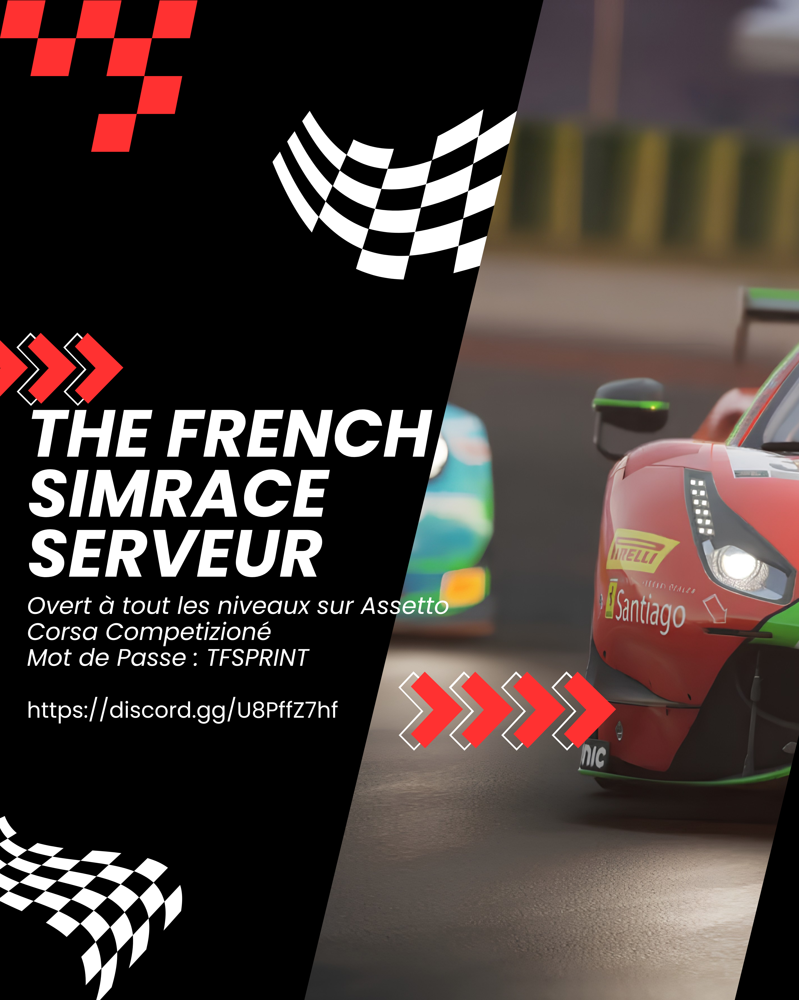

Bienvenue sur le Paddock

Ici, on ne regarde pas la course. On la fait.
The French Simrace, c'est une communauté francophone de passionnés de course virtuelle, réunie sur Assetto Corsa Competizione. Que tu débutes avec un pad ou que tu chronomètres tes tours au dixième de seconde sur un rig complet, tu as ta place sur la grille.
Chaque samedi soir, on se retrouve pour notre rendez-vous phare : The French Simrace Sprint. Un départ groupé, une ambiance conviviale sur le vocal, et des pilotes qui progressent ensemble, course après course.
Tous les samedis vers 21h, sur Assetto Corsa Competizione.
Du premier tour de piste aux pilotes les plus affûtés.
Partage de réglages, conseils de pilotage et tutos pour bien démarrer.
On roule fair-play, dans la bonne humeur, entre pilotes indépendants.
Situation actuelle
Aucun autre événement particulier n'est programmé pour l'instant.
Course hebdomadaire
Pour retrouver toutes les informations sur notre rendez-vous du samedi, cliquez directement ici.
Serveur in-game
TFSPRINT
Communauté Discord
Cliquez ici pour consulter l'espace Discord, les salons d'aide et voir les pilotes connectés en direct.
Infos sur la course hebdomadaire
The French Simrace Sprint - La Course du Samedi
Salut à tous les pilotes !
Préparez vos volants, on se retrouve en piste TOUS les week-ends pour une course hebdomadaire inoubliable !
Jeu : Assetto Corsa Competizione
Date & Heure : Les samedis soir vers 21h00
Niveau : Ouvert à tous les niveaux (des débutants aux plus confirmés !)
Comment rejoindre le serveur en jeu ?
- Nom du serveur : TFSPRINT
- Mot de passe : TFSPRINT
Venez nombreux pour partager un bon moment de course propre et conviviale ! N'hésitez pas à vous manifester en réaction sur le Discord si vous répondez présents. Si vous rencontrez le moindre problème pour nous rejoindre, pensez à consulter le salon #tuto-serveur-acc ou contactez-nous directement via un #ticket.
Infos sur les événements
Aucun événement spécial pour l'instant
Il n'y a pas d'autre championnat ou course spéciale planifiée pour le moment. Toutes nos énergies sont concentrées sur notre grand rendez-vous hebdomadaire !
Infos sur le serveur Discord
Rejoignez notre communauté de passionnés
Notre serveur Discord est le point de ralliement de tous nos pilotes. C'est ici que s'organisent les sessions d'entraînement, le partage des setups et le support technique.
Pour vous connecter dès maintenant et ne rien rater des prochaines grilles de départ, cliquez sur le bouton ci-dessous :
Pilotes connectés en temps réel
Retrouvez ci-dessous le statut du serveur et la liste des membres actuellement en ligne :